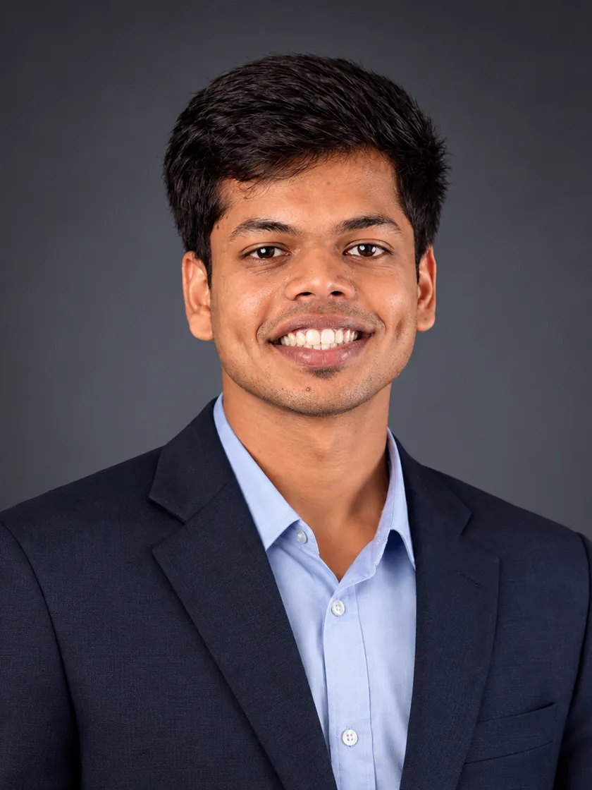
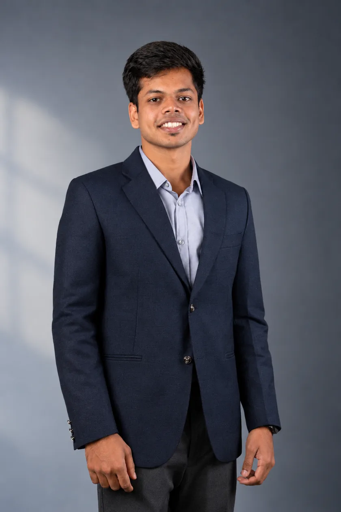

Additive Metallfertigung,
entwickelt und abgesichert.
Ich bin Prozessingenieur und dort am stärksten, wo ein Prozess entwickelt, qualifiziert und abgesichert werden muss, statt nur gefahren zu werden. Ich arbeite die gesamte Kette: ob sich ein Design fertigen lässt, wie es sich verhält, bevor Material eingesetzt wird, der Bauprozess selbst, dann Metallografie, Oberflächenmessung und die Statistik, die sagt, ob einem Parametersatz zu trauen ist.
- Umzugsbereit
- § 20 AufenthG · keine Sponsorship nötig
- Sofort verfügbar

teilweise aufgeschmolzenes Pulver an der Schichtkante
38,3 % glatter, gemessen KEYENCE VR-3100
vollständig globulitisches Gefüge
begutachtet in Procedia CIRP, 2024
Diese Startseite und der Lebenslauf sind auf Deutsch verfügbar. Die technischen Detailseiten (Projekte, Forschung, Kenntnisse) sind auf Englisch, der Sprache meines Studiums, meiner Masterarbeit und meiner Publikation.
Ein offenes Wort zu meinem Deutsch: derzeit B1; ab Oktober 2026 folgt ein B2-Kurs, danach C1 mit Zertifikatsprüfung (geplant). Fachliche Gespräche führe ich sicher auf Englisch und arbeite mich im deutschsprachigen Umfeld konsequent weiter ein.
Über mich
Prozessingenieur für die additive Metallfertigung, am stärksten dort, wo ein Prozess entwickelt, qualifiziert und abgesichert werden muss, statt nur gefahren zu werden.
Hoch motiviert, kreativ und eigenständig über den gesamten Prozess: beurteilen, ob sich ein Design fertigen lässt, sein Verhalten simulieren, bevor Material eingesetzt wird, den Bauprozess vorbereiten und fahren, danach Nachbearbeitung, Metallografie, Oberflächenmessung und die Statistik, die sagt, ob einem Parametersatz zu trauen ist. Keine Stufe gebe ich aus der Hand.
Strukturiert und lösungsorientiert. Vor einem Fehlschlag analytisch und ruhig statt entmutigt, und sorgfältig genug, ein Ergebnis erst dann als gesichert zu bezeichnen, wenn es reproduziert ist.
Kommunikativ über Fachgrenzen hinweg und sicher darin, eine Entscheidung auch außerhalb des Labors zu erklären.
Neugierig, optimistisch und weiterhin lernend. Der nächste Schritt ist, qualifizierte Prozesse in die reproduzierbare Produktion zu tragen.

Was ich in ein Ingenieurteam einbringe
| Verfahrensentwicklung | Ich mache aus einem Werkstoff, für den es noch kein Rezept gibt, einen dokumentierten und reproduzierbaren Prozess. |
| Werkstoffcharakterisierung | Die Laborarbeit mache ich selbst: Trennen, Schleifen, Polieren, Mikroskopie, Oberflächenmesstechnik. Kein Warten auf ein externes Labor. |
| Konstruktion & Simulation | CATIA, NX und Creo, validiert in ANSYS. Ich habe Hardware konstruiert, simuliert, gefertigt und in eine laufende Anlage eingebaut. |
| Gestaltung & Kreativität | Ich skizziere Konzepte von Hand, lasse mich von Formen aus der Natur inspirieren und konstruiere entlang der tatsächlichen Nutzung (Zertifikat Angewandte Ergonomie). Handzeichnungen auf Grundniveau; in CAD setze ich einen Entwurf vollständig um. |
| Fertigungsnähe | 4-Achs-CNC und Reverse Engineering. Ich konstruiere Bauteile, die sich auch fertigen lassen. |
| Wissenstransfer | Eine begutachtete Veröffentlichung und über 250 geschulte Ingenieure auf fünf CAD-Plattformen. Creo, CATIA, ANSYS, GD&T und Reverse Engineering unterrichte ich bis heute freiberuflich. Ich dokumentiere im Verlauf. |
Ausgewählte Projekte
Die vollständigen Projektbeschreibungen sind auf Englisch.

Prozessintegriertes Laser-Umschmelzen für weichmagnetische FeSi6.5-Bauteile
Ein Umschmelzverfahren im Wärmeleitungsregime, das die Schichtoberfläche einer sehr spröden Legierung glättet, als Grundlage für dünne Isolationsschichten in geblechten Weichmagneten.
Sa 1,77 µm · veröffentlicht 2024 →

Schutzgas-Zirkulationssystem für eine PBF-LB/M-Forschungsanlage
Konstruiert, simuliert, gefertigt und integriert: aktive Spritzerabfuhr, in Metall ausgeführt, damit sie die für die Anlage geplante Plattformheizung verträgt.
CAD · CFD · gebaut · validiert →

Porositätsminimierung in lasergesintertem Cobalt-Chrom für medizinische Implantate
Neun Versuche statt siebenundzwanzig. Eine zehnfache Streuung der Porosität kartiert und den maßgeblichen Parameter identifiziert.
2,8 % gegenüber 27,06 % · Scangeschwindigkeit dominiert →
Zwei weitere auf der Projektseite: eine thermische Charakterisierung von gedrucktem Aluminium für die Luft- und Raumfahrt sowie eine Kamerahalterung, die ich konstruiert und gebaut habe, weil das Labor eine brauchte.